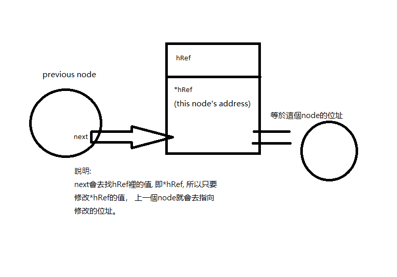

1. Two Sum
/**
* Note: The returned array must be malloced, assume caller calls free().
*/
int* twoSum(int* nums, int numsSize, int target, int* returnSize){
*returnSize = 2;
int *result;
result = (int *)malloc((*returnSize)*sizeof(int));
for(int i=0; i<numsSize; i++)
for(int j=1+i; j<numsSize; j++)
if(nums[i]+nums[j]==target) {
result[0] = i;
result[1] = j;
}
return result;
}
9. Palindrome Number
bool isPalindrome(int x){
long int rev, tmp;
rev = 0;
tmp = x;
while(tmp>0){
rev = rev*10 + tmp%10;
tmp /= 10;
}
return (rev==x && x>-1);
}
13. Roman to Integer
int checkLastNumber(int now, int last) {
return ( now<=last ? now : now-2*last );
}
int romanToInt(char * s){
int rev=0;
int lastValue = rev;
for(int i=0; i<strlen(s); i++) {
switch(s[i]) {
case 'M':
rev += checkLastNumber(1000, lastValue);
lastValue = 1000;
break;
case 'D':
rev += checkLastNumber(500, lastValue);
lastValue = 500;
break;
case 'C':
rev += checkLastNumber(100, lastValue);
lastValue = 100;
break;
case 'L':
rev += checkLastNumber(50, lastValue);
lastValue = 50;
break;
case 'X':
rev += checkLastNumber(10, lastValue);
lastValue = 10;
break;
case 'V':
rev += checkLastNumber(5, lastValue);
lastValue = 5;
break;
case 'I':
rev += checkLastNumber(1, lastValue);
lastValue = 1;
break;
default: break;
}
}
return rev;
}
用Hash Table解法
14. Longest Common Prefix
char * longestCommonPrefix(char ** strs, int strsSize){
int min=INT_MAX;
int counter = 0;
char *rev;
for(int i=0; i<strsSize; i++) {
min = strlen(strs[i]) < min ? strlen(strs[i]) : min;
}
for(int i=0; i<min; i++) {
for(int j=1; j<strsSize; j++) {
if(strs[0][i]!=strs[j][i]) {
min = 0;
counter--; //寫這個的原因是要讓下面的counter增加，而下面的counter一定要增加，因為如果傳進來的strs只有一個字串且一個字元, 這裡的for就不會run, 分配的空間'\0'需要佔一char，所以下面calloc分配的空間要再加一。
break;
}
}
counter++;
}
rev = (char *)calloc((++counter), sizeof(char));
snprintf(rev, counter, "%s", *strs);
return rev;
}
20. Valid Parentheses
策略: s指標不動(即字串開頭), p指標持續前進, q指標遇(,[,{則將內容改成),],}且q指標前進, 而其他內容則q後退，最後return看q指標的位址是否是s指標相同。
bool isValid(char *s) {
char *q = s;
for(char *p=s; *p; p++)
switch(*p) {
case '(':
*q++ = ')';
continue;
case '{':
*q++ = '}';
continue;
case '[':
*q++ = ']';
continue;
default:
if(q==s || *p != *--q)
return false;
}
return q==s;
}
21. Merge Two Sorted Lists
hint: 犧牲起始開頭的node。
/**
* Definition for singly-linked list.
* struct ListNode {
* int val;
* struct ListNode *next;
* };
*/
struct ListNode* mergeTwoLists(struct ListNode* list1, struct ListNode* list2){
struct ListNode *pt, start;
pt = &start;
while(list1 && list2) {
if(list1->val < list2->val) {
pt->next = list1;
list1 = list1->next;
} else {
pt->next = list2;
list2 = list2->next;
}
pt = pt->next;
}
// 有個list的內容已經沒有了, 所以跳出while
pt-> next = (list1 ? list1 : list2);
return start.next;
}
26. Remove Duplicates from Sorted Array
策略: i和j是nums的index, i持續前進檢查, j只會停在新寫入的index，回傳值是有幾個不同的index。
int removeDuplicates(int* nums, int numsSize){
int i,j;
for(i=1,j=0; i<numsSize; i++)
if(nums[j]!=nums[i]) nums[++j] = nums[i];
return ++j;
}
27. Remove Element
int removeElement(int* nums, int numsSize, int val){
int counter=numsSize;
int i;
for(i=0; i<counter;)
if(nums[i]==val){
/* 就算賦予counter-1的index還是和val相等, 下個iteration還是會去檢查, 但這次counter不同了。*/
nums[i] = nums[counter-1];
counter--;
} else
i++;
return counter;
}
28. Implement strStr()
If it can work. Don't touch it!
int strStr(char * haystack, char * needle){
int s1=strlen(haystack);
int s2=strlen(needle);
int i,j;
for(i=0;i<s1;i++) {
if(haystack[i]==needle[0]) {
if((i+s2-1)<s1) {
for(j=0;j<s2;j++) {
if(haystack[j+i]!=needle[j]) {
j++; // break的話, for裡的j不會++, 所以在這裡j++
break;
}
}
/* 上面for結束, j會多加一(不論是for裡還是if執行的) */
j--; // 以便下面if的判斷
if(haystack[j+i]==needle[j])
return i;
}
}
}
return -1;
}
35. Search Insert Position
int searchInsert(int* nums, int numsSize, int target){
int i;
for(i=0; i<numsSize; i++)
if(target<=nums[i])
break;
return i;
}
58. Length of Last Word
int lengthOfLastWord(char * s){
int lastIndex = strlen(s)-1;
int counter = 0;
for(int i=lastIndex; i>=0; i--)
if(s[i]==' ' && counter!=0)
break;
else if(s[i]!=' ')
counter++;
return counter;
}
66. Plus One
這裡returnSize指的是回傳陣列的size, 並不是回傳值。
/**
* Note: The returned array must be malloced, assume caller calls free().
*/
int* plusOne(int* digits, int digitsSize, int* returnSize){
digits[digitsSize-1]++;
for(int i=digitsSize-1; i>0 && digits[i]>=10; i--) {
digits[i] -= 10;
digits[i-1] += 1;
}
int *rev = digits;
*returnSize = digitsSize;
if(digits[0]>=10) {
digits[0] -=10;
rev = (int *)calloc(++*returnSize, sizeof(int));
rev[0] = 1;
memcpy(rev+1, digits, digitsSize*sizeof(int));
}
return rev;
}
67. Add Binary
char * addBinary(char * a, char * b){
int sizeA = strlen(a);
int sizeB = strlen(b);
int sizeOutput = (sizeA > sizeB ? sizeA : sizeB) + 1; // 可能進位, 所以預留一格(size+1)。
char *output = (char *) malloc(sizeOutput*sizeof(char)+1); // 需要留一個'\0'的字元 所以多分配一個byte。
int sum=0;
output[sizeOutput] = '\0';
/* sizeA和sizeB計算完了，sum可能還需要計算進位的值。 */
while(sizeA>0 || sizeB>0 || sum>0) {
if(sizeA>0)
sum += a[--sizeA] - '0';
if(sizeB>0)
sum += b[--sizeB] - '0';
output[--sizeOutput] = sum%2 + '0';
sum /=2;
}
/* 這邊回傳output的位址加sizeOutput, 是因為如果沒進位, sizeOutput值是1,
而進位的那格會是亂碼，那從output[1]的位址回傳就行了。
*/
return output + sizeOutput;
}
69. Sqrt(x)
int mySqrt(int x){
int rev;
if(x<=1) return x;
for(long int i=1; i*i<=x; i++)
rev = i;
return rev;
}
70. Climbing Stairs
int climbStairs(int n){
int ways = 0;
int lastFirst=2, lastSec=1;
if(n==0 || n==1 || n==2) return n;
for(int i=3; i<=n; i++){
/* calculate ways */
ways = lastFirst + lastSec;
/* prepare for next steps */
lastSec = lastFirst;
lastFirst = ways;
}
return ways;
}
83. Remove Duplicates from Sorted List
/**
* Definition for singly-linked list.
* struct ListNode {
* int val;
* struct ListNode *next;
* };
*/
struct ListNode* deleteDuplicates(struct ListNode* head){
if(head==NULL) return NULL;
struct ListNode *p, *q;
/* p keep forward, q remark pointer */
p = q = head;
while(q->next) {
if(q->val == q->next->val) {
p = q->next->next;
free(q->next);
q->next = p;
} else {
q = q->next;
}
}
return head;
}
88. Merge Sorted Array
切記不要自作聰明用"? :"加上--或++ , 在還沒賦予之前就改變裡面內容了。
void merge(int* nums1, int nums1Size, int m, int* nums2, int nums2Size, int n){
/* index minus 1*/
--m; --n;
while(m>=0 && n>=0) {
if(nums1[m]>nums2[n]) {
nums1[m+n+1] = nums1[m];
m--;
} else {
nums1[m+n+1] = nums2[n];
n--;
}
}
while(n>=0) {
nums1[n] = nums2[n];
n--;
}
}
94. Binary Tree Inorder Traversal
/**
* Note: The returned array must be malloced, assume caller calls free().
*/
static int buffer[100];
static int counter;
void inorder(struct TreeNode *root) {
if(root!=NULL) {
inorder(root->left);
buffer[counter++] = root->val;
inorder(root->right);
}
}
int* inorderTraversal(struct TreeNode* root, int* returnSize){
counter = 0;
if(root==NULL) {
*returnSize = 0;
return NULL;
}
inorder(root);
*returnSize = counter;
return buffer;
}
100. Same Tree
/**
* Definition for a binary tree node.
* struct TreeNode {
* int val;
* struct TreeNode *left;
* struct TreeNode *right;
* };
*/
bool isSameTree(struct TreeNode* p, struct TreeNode* q){
if(p==NULL && q==NULL) return true;
else if(p==NULL || q==NULL) return false;
return (p->val==q->val) && isSameTree(p->left, q->left) && isSameTree(p->right, q->right);
}
101. Symmetric Tree
邏輯判斷要思考清楚。
/**
* Definition for a binary tree node.
* struct TreeNode {
* int val;
* struct TreeNode *left;
* struct TreeNode *right;
* };
*/
void cmp(struct TreeNode *left, struct TreeNode *right, bool *ans) {
if((left && !right) || (right && !left)) *ans=false;
else if(left && right){
if(left->val != right->val) *ans=false;
cmp(left->left, right->right, ans);
cmp(left->right, right->left, ans);
}
}
bool isSymmetric(struct TreeNode* root){
bool ans = true;
if(root->left==NULL && root->right==NULL) return true;
/* cmp只要一步沒過, ans就是false了 */
cmp(root->left, root->right, &ans);
return ans;
}
104. Maximum Depth of Binary Tree
/**
* Definition for a binary tree node.
* struct TreeNode {
* int val;
* struct TreeNode *left;
* struct TreeNode *right;
* };
*/
int maxDepth(struct TreeNode* root){
/* root==NULL */
if(!root) return 0;
int maxLeft = maxDepth(root->left);
int maxRight = maxDepth(root->right);
return ( maxLeft>maxRight ? maxLeft : maxRight )+1;
}
108. Convert Sorted Array to Binary Search Tree
/**
* Definition for a binary tree node.
* struct TreeNode {
* int val;
* struct TreeNode *left;
* struct TreeNode *right;
* };
*/
struct TreeNode* createNode(int* nums, int l, int r) {
if(r<l) return NULL;
int m = (l+r)/2;
struct TreeNode *root = (struct TreeNode*) malloc(sizeof(struct TreeNode));
root->val = nums[m];
root->left = createNode(nums, l, m-1);
root->right = createNode(nums, m+1, r);
return root;
}
struct TreeNode* sortedArrayToBST(int* nums, int numsSize){
return createNode(nums, 0, numsSize-1);
}
110. Balanced Binary Tree
/**
* Definition for a binary tree node.
* struct TreeNode {
* int val;
* struct TreeNode *left;
* struct TreeNode *right;
* };
*/
int findDepth(struct TreeNode *root) {
/* if node is empty. */
if(!root) return 0;
int leftDepth = findDepth(root->left);
int rightDepth = findDepth(root->right);
/* return的時候才增加深度 */
return (leftDepth>rightDepth ? leftDepth : rightDepth)+1;
}
bool isBalanced(struct TreeNode* root){
/* if tree is empty. */
if(!root) return true;
int leftDepth = findDepth(root->left);
int rightDepth = findDepth(root->right);
if(leftDepth-rightDepth<-1 || leftDepth-rightDepth>1) return false;
/* checking subtree */
return (isBalanced(root->left) && isBalanced(root->right));
}
111. Minimum Depth of Binary Tree
/**
* Definition for a binary tree node.
* struct TreeNode {
* int val;
* struct TreeNode *left;
* struct TreeNode *right;
* };
*/
int minDepth(struct TreeNode* root){
if(!root) return 0;
if(!root->left && !root->right) return 1;
else if(!root->left && root->right)
return 1+minDepth(root->right);
else if(root->left && !root->right)
return 1+minDepth(root->left);
int leftMin = minDepth(root->left);
int rightMin = minDepth(root->right);
return ( leftMin<rightMin ? leftMin : rightMin )+1;
}
112. Path Sum
ref
/**
* Definition for a binary tree node.
* struct TreeNode {
* int val;
* struct TreeNode *left;
* struct TreeNode *right;
* };
*/
bool hasPathSum(struct TreeNode* root, int targetSum){
/* if root is empty */
if(!root) return false;
if(!root->left && !root->right)
return targetSum==root->val;
if(root->left && hasPathSum(root->left, targetSum-root->val)) return true;
if(root->right && hasPathSum(root->right, targetSum-root->val)) return true;
return false;
}
118. Pascal's Triangle
/**
* Return an array of arrays of size *returnSize.
* The sizes of the arrays are returned as *returnColumnSizes array.
* Note: Both returned array and *columnSizes array must be malloced, assume caller calls free().
*/
int** generate(int numRows, int* returnSize, int** returnColumnSizes){
*returnSize = numRows;
*returnColumnSizes = (int *) malloc(numRows*sizeof(int));
int **returnArr = (int **) malloc(numRows*sizeof(int*));
for(int i=0; i<*returnSize; i++) {
returnArr[i] = (int*)malloc((i+1)*sizeof(int));
(*returnColumnSizes)[i] = i+1;
for(int j=0; j<i+1; j++) {
if(j==0 || j==i)
/* 最左跟最右 */
returnArr[i][j] = 1;
else
returnArr[i][j] = returnArr[i-1][j] + returnArr[i-1][j-1];
}
}
return returnArr;
}
119. Pascal's Triangle II
/**
* Note: The returned array must be malloced, assume caller calls free().
*/
int* getRow(int rowIndex, int* returnSize){
*returnSize = rowIndex+1;
int *returnArr = (int*)malloc((*returnSize)*sizeof(int));
if(rowIndex==0) returnArr[0]=1;
else{
returnArr[0] = returnArr[rowIndex] = 1;
returnArr[1] = returnArr[rowIndex-1] = rowIndex;
long number = rowIndex;
for(int i=1; i<rowIndex-1; i++) {
/* 這裡使用 "*="會錯 */
number = number*(rowIndex-i)/(i+1);
returnArr[i+1] = number;
}
}
return returnArr;
}
121. Best Time to Buy and Sell Stock
int maxProfit(int* prices, int pricesSize){
int minDay = INT_MAX;
int maxProfit = 0;
for(int i=0; i<pricesSize; i++) {
if(prices[i]<minDay) minDay = prices[i];
else if(maxProfit<prices[i]-minDay)
maxProfit = prices[i]-minDay;
}
return maxProfit;
}
125. Valid Palindrome
bool isPalindrome(char * s){
int i=0;
int j=strlen(s)-1;
while(j>i) {
if(isalnum(s[i]) && isalnum(s[j])) {
/* i++ and j-- must be implement. Otherwise, leetcode will tell you "Time Limit Exceeded" */
if(tolower(s[i++])!=tolower(s[j--])) return false;
}
else {
if(!isalnum(s[i])) i++;
if(!isalnum(s[j])) j--;
}
}
return true;
}
136. Single Number
int singleNumber(int* nums, int numsSize){
int res = nums[0];
for(int i=1; i<numsSize; i++)
/* xor */
res ^= nums[i];
return res;
}
141. Linked List Cycle
倒追
/**
* Definition for singly-linked list.
* struct ListNode {
* int val;
* struct ListNode *next;
* };
*/
bool hasCycle(struct ListNode *head) {
struct ListNode *fast, *slow;
fast = slow = head;
while(fast && fast->next) {
slow = slow->next;
fast = fast->next->next;
if(slow == fast) return true;
}
return false;
}
144. Binary Tree Preorder Traversal
/**
* Definition for a binary tree node.
* struct TreeNode {
* int val;
* struct TreeNode *left;
* struct TreeNode *right;
* };
*/
/**
* Note: The returned array must be malloced, assume caller calls free().
*/
void travel(struct TreeNode *root, int *returnArr,int *returnSize) {
if(root != NULL) {
/* *returnSize要括號，不然會位移returnSize的位址*/
returnArr[(*returnSize)++] = root->val;
travel(root->left, returnArr, returnSize);
travel(root->right, returnArr, returnSize);
}
}
int* preorderTraversal(struct TreeNode* root, int* returnSize){
*returnSize = 0;
int *returnArr = (int *)malloc(100*sizeof(int));
travel(root, returnArr, returnSize);
returnArr = realloc(returnArr, (*returnSize)*sizeof(int));
return returnArr;
}
145. Binary Tree Postorder Traversal
/**
* Definition for a binary tree node.
* struct TreeNode {
* int val;
* struct TreeNode *left;
* struct TreeNode *right;
* };
*/
/**
* Note: The returned array must be malloced, assume caller calls free().
*/
void travel(struct TreeNode *root, int *returnArr,int *returnSize) {
if(root != NULL) {
travel(root->left, returnArr, returnSize);
travel(root->right, returnArr, returnSize);
returnArr[(*returnSize)++] = root->val;
}
}
int* postorderTraversal(struct TreeNode* root, int* returnSize){
*returnSize = 0;
int *returnArr = (int *)malloc(100*sizeof(int));
travel(root, returnArr, returnSize);
returnArr = realloc(returnArr, (*returnSize)*sizeof(int));
return returnArr;
}
160. Intersection of Two Linked Lists
齊頭
/**
* Definition for singly-linked list.
* struct ListNode {
* int val;
* struct ListNode *next;
* };
*/
struct ListNode *getIntersectionNode(struct ListNode *headA, struct ListNode *headB) {
int countLen = 0;
struct ListNode *needle;
for(needle = headA; needle; ++countLen, needle=needle->next);
for(needle = headB; needle; --countLen, needle=needle->next);
if(countLen<0)
for(; countLen!=0; ++countLen, headB=headB->next);
else if(countLen>0)
for(;countLen; --countLen, headA=headA->next);
while(headA && headB) {
if(headA==headB) return headA;
headA = headA->next;
headB = headB->next;
}
return NULL;
}
168. Excel Sheet Column Title
char * convertToTitle(int columnNumber){
char *pt = (char*) malloc(32*sizeof(char));
pt += 31;
*pt = '\0';
while(columnNumber) {
pt--;
/* 配合0~25 */
columnNumber--;
*pt = (columnNumber%26) + 65;
columnNumber /= 26;
}
return pt;
}
169. Majority Element
int majorityElement(int* nums, int numsSize){
int res;
/* 當counter為0時，res換人，res值一樣時counter++, 否則counter--。 */
int counter=0;
for(int i=0; i<numsSize; i++) {
if(counter==0) {
res = nums[i];
counter++;
}
else if(res==nums[i]) counter++;
else counter--;
}
return res;
}
int majorityElement(int* nums, int numsSize){
int ret = nums[0];
int count = 1;
for(int i=1; i<numsSize; i++) {
if(ret == nums[i]) count++;
else {
count--;
/* count==0時換人, count裡的值代表ret的個數 */
if(count==0) {
ret = nums[i];
count++;
}
}
}
return ret;
}
171. Excel Sheet Column Number
int titleToNumber(char * columnTitle){
int returnNumber = 0;
for(int i=strlen(columnTitle)-1; i>=0; i--) {
returnNumber += (((int)columnTitle[i] -64 )*(pow(26,(strlen(columnTitle)-(i+1)))));
}
return returnNumber;
}
int titleToNumber(char * columnTitle){
long int ret=0;
long int len = strlen(columnTitle);
for(int i=len-1; i>=0; i--)
ret +=
((int)columnTitle[i] - 64)
*
pow(26, len-i-1);
return ret;
}
190. Reverse Bits
uint32_t reverseBits(uint32_t n) {
uint32_t res = 0;
uint32_t tmp;
for(int i=0; i<32; i++) {
tmp = (n >> i) & 1;
res += tmp << (31-i);
}
return res;
}
191. Number of 1 Bits
int hammingWeight(uint32_t n) {
int count=0;
while(n) {
if(n&1)
count++;
n = n>>1;
}
return count;
}
202. Happy Number
最小的不快樂數為4
wiki
bool isHappy(int n){
int total = 0;
while(true) {
while(n>0) {
total += (n%10) * (n%10);
n /= 10;
}
if(total==1) return true;
else if(total==4) return false;
n = total;
total = 0;
}
}
203. Remove Linked List Elements
雙指標
/**
* Definition for singly-linked list.
* struct ListNode {
* int val;
* struct ListNode *next;
* };
*/
struct ListNode* removeElements(struct ListNode* head, int val){
struct ListNode **hRef = &head; /* hRef本身的位址是不變的 */
struct ListNode *tmp = NULL; // for free node
while(*hRef) {
if((*hRef)->val == val) {
tmp = *hRef;
/* 原本上一個node的next會等於*hRef, 現在改成下一個node的位址。*/
*hRef = (*hRef)->next;
/* free掉這個node */
free(tmp);
} else {
/* hRef換成下一個node位址的位址 */
hRef = &((*hRef)->next);
}
}
return head;
}

205. Isomorphic Strings
bijective
bool isIsomorphic(char * s, char * t){
int domain[127] = {0};
int coDomain[127] = {0};
if(strlen(s)!=strlen(t)) return false;
for(int i=0; i<strlen(s); i++) {
/* 先看在domain或coDomain裡有無值, 再看內容對不對。 */
if((domain[s[i]] || coDomain[t[i]]) && (domain[s[i]] != t[i] || coDomain[t[i]] != s[i])) return false;
/* 還沒有內容時，寫入相對應之值。 */
else {
domain[s[i]] = t[i];
coDomain[t[i]] = s[i];
}
}
return true;
}
206. Reverse Linked List
/**
* Definition for singly-linked list.
* struct ListNode {
* int val;
* struct ListNode *next;
* };
*/
struct ListNode* reverseList(struct ListNode* head){
struct ListNode *pre, *next, *pt;
pre = NULL;
next = NULL;
pt = head;
while(pt) {
/* next指向下一個 */
next = pt->next;
/* 現在的指標反轉到前面 */
pt->next = pre;
/* pre 換成現在pt位址 */
pre = pt;
/* pt 換成現在next位址 */
pt = next;
}
return pre;
}
217. Contains Duplicate
quick sort 函式: qsort, reference
Merge sort參考
int compare(const void *a, const void *b) {
return *(int*)a - *(int*)b;
}
bool containsDuplicate(int* nums, int numsSize){
/* qsort( 陣列指標, 陣列長度, 陣列每格大小, 比較函式(引數為函式指標) ) */
qsort(nums, numsSize, sizeof(int), compare);
for(int i=0; i<numsSize-1; i++)
if(nums[i]==nums[i+1]) return true;
return false;
}
219. Contains Duplicate II
struct hash_table {
int key;
int value;
/* hash table 初始化用 */
UT_hash_handle hh;
};
bool containsNearbyDuplicate(int* nums, int numsSize, int k){
struct hash_table *map = NULL;
for(int i=0; i<numsSize; i++) {
struct hash_table *temp;
/* HASH_FIND_INT用來檢查nums[i]是否有這個在map的key了 */
/* 即map裡有nums[i]就賦予給temp */
HASH_FIND_INT(map, &nums[i], temp);
if(temp==NULL) {
temp = (struct hash_table *)malloc(sizeof(struct hash_table));
temp->key = nums[i];
temp->value = i;
/* 將temp的key當作index放入map */
HASH_ADD_INT(map, key, temp);
} else {
if(i-(temp->value) <=k) return true;
else
/* 沒有符合<=k就使temp的value成為新的i */
temp->value = i;
}
}
return false;
}
225. Implement Stack using Queues
typedef struct {
/* f: front, r: rear*/
int f, r, size; // 這裡的f,r為arr的index, size為arr的大小
int *arr;
} queue;
typedef struct {
/* q: myQueue */
queue *q;
} MyStack;
void enQueue(queue *q, int val) {
if(q->r != q->size-1) {
(q->r)++;
q->arr[q->r] =val;
}
}
int deQueue(queue *q) {
if(q->r != q->f) {
int val = q->arr[q->r];
(q->r)--;
return val;
}
return -1;
}
MyStack* myStackCreate() {
MyStack* stack = (MyStack*) malloc(sizeof(MyStack));
/* 分配完queue的空間後, 再去分配arr的空間 */
stack->q = (queue*) malloc(sizeof(queue));
stack->q->f = stack->q->r = -1;
stack->q->size = 50;
stack->q->arr = (int *)malloc(sizeof(int)*(stack->q->size));
return stack;
}
void myStackPush(MyStack* obj, int x) {
enQueue(obj->q, x);
}
int myStackPop(MyStack* obj) {
return deQueue(obj->q);
}
int myStackTop(MyStack* obj) {
return obj->q->arr[obj->q->r];
}
bool myStackEmpty(MyStack* obj) {
return (obj->q->f == obj->q->r);
}
void myStackFree(MyStack* obj) {
free(obj->q);
free(obj);
}
/**
* Your MyStack struct will be instantiated and called as such:
* MyStack* obj = myStackCreate();
* myStackPush(obj, x);
* int param_2 = myStackPop(obj);
* int param_3 = myStackTop(obj);
* bool param_4 = myStackEmpty(obj);
* myStackFree(obj);
*/
226. Invert Binary Tree
/**
* Definition for a binary tree node.
* struct TreeNode {
* int val;
* struct TreeNode *left;
* struct TreeNode *right;
* };
*/
struct TreeNode* invertTree(struct TreeNode* root){
if(root==NULL || (root->left==NULL && root->right==NULL)) return root;
struct TreeNode *tmp;
tmp = root->left;
root->left = root->right;
root->right = tmp;
invertTree(root->left);
invertTree(root->right);
return root;
}
228. Summary Ranges
ret分配的大小需要大一點。
/**
* Note: The returned array must be malloced, assume caller calls free().
*/
char ** summaryRanges(int* nums, int numsSize, int* returnSize){
*returnSize = 0;
if(numsSize==0) return NULL;
int count=0;
int start = nums[0];
/* pre_pt會去檢查num[i]前一個數是否連續 */
int pre_pt = nums[0];
char **ret = (char**)malloc(sizeof(char*)*20);
ret[0] = (char*)malloc(sizeof(char)*30);
for(int i=1; i<numsSize; i++) {
ret[i] = (char*)malloc(sizeof(char)*30);
if( pre_pt != (nums[i]-1) ) {
if(pre_pt==start)
sprintf(ret[count++], "%d", start);
else
sprintf(ret[count++], "%d->%d", start, pre_pt);
start = nums[i];
}
pre_pt = nums[i];
}
if(pre_pt==start)
sprintf(ret[count++], "%d", start);
else
sprintf(ret[count++], "%d->%d", start, pre_pt);
*returnSize = count;
return ret;
}
231. Power of Two
bool isPowerOfTwo(int n){
if(n<1) return false;
while(n>1) {
if(n%2!=0) return false;
n /= 2;
}
return true;
}
232. Implement Queue using Stacks
typedef struct {
int top;
int bottom;
int size;
int *arr;
} MyQueue;
MyQueue* myQueueCreate() {
MyQueue *myqueue = (MyQueue*) malloc(sizeof(MyQueue));
myqueue->top = -1;
myqueue->bottom = 0;
myqueue->size = 50;
myqueue->arr = (int*) malloc((myqueue->size)*sizeof(int));
return myqueue;
}
void myQueuePush(MyQueue* obj, int x) {
if((obj->top)!=(obj->size)-1)
obj->arr[++(obj->top)] = x;
}
bool myQueueEmpty(MyQueue* obj) {
if((obj->top) <=-1 || (obj->bottom > obj->top))
return true;
return false;
}
int myQueuePop(MyQueue* obj) {
int tmp;
if(!myQueueEmpty(obj)) {
tmp = obj->arr[(obj->bottom)++];
return tmp;
}
exit(1);
}
int myQueuePeek(MyQueue* obj) {
return obj->arr[obj->bottom];
}
void myQueueFree(MyQueue* obj) {
free(obj);
}
/**
* Your MyQueue struct will be instantiated and called as such:
* MyQueue* obj = myQueueCreate();
* myQueuePush(obj, x);
* int param_2 = myQueuePop(obj);
* int param_3 = myQueuePeek(obj);
* bool param_4 = myQueueEmpty(obj);
* myQueueFree(obj);
*/
235. Lowest Common Ancestor of a Binary Search Tree
/**
* Definition for a binary tree node.
* struct TreeNode {
* int val;
* struct TreeNode *left;
* struct TreeNode *right;
* };
*/
struct TreeNode* lowestCommonAncestor(struct TreeNode* root, struct TreeNode* p, struct TreeNode* q) {
if(root==p || root==q || !root)
return root;
struct TreeNode *left = lowestCommonAncestor(root->left, p, q);
struct TreeNode *right = lowestCommonAncestor(root->right, p, q);
if(left && right) return root;
else if(left) return left;
else if(right) return right;
else return NULL;
}
234. Palindrome Linked List
/**
* Definition for singly-linked list.
* struct ListNode {
* int val;
* struct ListNode *next;
* };
*/
struct ListNode* reverse(struct ListNode *node) {
struct ListNode *rev = node;
if(node && node->next) {
rev = reverse(node->next);
node->next->next = node;
node->next = NULL;
}
/* 遞迴到最後回傳原本最後一個node的位址 */
return rev;
}
bool isPalindrome(struct ListNode* head){
if(!head->next) return true;
struct ListNode *h = head;
struct ListNode *part_two = head;
/* counting nodes */
int count = 0;
while(h) {
h = h->next;
count++;
}
h = head;
int mid = count/2;
/* move part_two to half part */
for(int i=0; i<mid; i++) {
part_two = part_two->next;
}
if(count%2==1) part_two = part_two->next;
part_two = reverse(part_two);
while(h && part_two) {
if(h->val != part_two->val) return false;
h = h->next;
part_two = part_two->next;
}
return true;
}
237. Delete Node in a Linked List
/**
* Definition for singly-linked list.
* struct ListNode {
* int val;
* struct ListNode *next;
* };
*/
void deleteNode(struct ListNode* node) {
struct ListNode *tmp = node->next;
node->val = node->next->val;
node->next = node->next->next;
free(tmp);
}
242. Valid Anagram
bool isAnagram(char * s, char * t){
int h['z'+1] = {0};
for(;*s;s++) h[*s]++;
for(;*t;t++) h[*t]--;
for(int i='a'; i<'z'; i++)
if(h[i]!=0) return false;
return true;
}
257. Binary Tree Paths
/**
* Definition for a binary tree node.
* struct TreeNode {
* int val;
* struct TreeNode *left;
* struct TreeNode *right;
* };
*/
/**
* Note: The returned array must be malloced, assume caller calls free().
*/
void treePath(struct TreeNode* root, char **ret, int *returnSize) {
if(!root->right && !root->left) {
ret[*returnSize] = calloc(700, sizeof(char));
sprintf(ret[*returnSize], "%d", root->val);
(*returnSize)++;
return;
}
int i=0;
if(root->left) {
i = *returnSize;
treePath(root->left, ret, returnSize);
char tmp[700] = {};
for(;i<*returnSize; i++) {
sprintf(tmp, "%d->%s", root->val, ret[i]);
sprintf(ret[i], "%s", tmp);
}
}
if(root->right) {
i = *returnSize;
treePath(root->right, ret, returnSize);
char tmp[700] = {};
for(; i<*returnSize; i++) {
sprintf(tmp, "%d->%s", root->val, ret[i]);
sprintf(ret[i], "%s", tmp);
}
}
}
char ** binaryTreePaths(struct TreeNode* root, int* returnSize){
char **ret = (char**) malloc(sizeof(char*)*100);
*returnSize = 0;
treePath(root, ret, returnSize);
return ret;
}
258. Add Digits
int addDigits(int num){
if(num==0) return 0;
int ret = 0;
while(true) {
while(num>0) {
ret += num%10;
num/=10;
}
if((ret/10)==0) return ret;
num = ret;
ret = 0;
}
}
263. Ugly Number
bool isUgly(int n){
if(n<2 && n>0) return true;
while(n>0) {
while(n>1) {
if(n%2==0) n /=2;
else if(n%3==0) n /= 3;
else if(n%5==0) n /= 5;
else return false;
}
return true;
}
return false;
}
268. Missing Number
兩底和乘高除二
為啥for(; *nums; nums++)會錯啊
int missingNumber(int* nums, int numsSize){
long int total = ((numsSize+1)*numsSize) /2;
for(int i=0; i<numsSize; i++)
total -=nums[i];
return total;
}
278. First Bad Version
// The API isBadVersion is defined for you.
// bool isBadVersion(int version);
int firstBadVersion(int n) {
long int l,r,mid;
l = 0;
r = n-1;
while(l<=r) {
mid = (l+r)/2;
if(isBadVersion(mid)) {
if(isBadVersion(mid)==isBadVersion(mid-1)) {
r = mid-1;
} else {
return mid;
}
} else {
if(isBadVersion(mid) == isBadVersion(mid+1)) {
l = mid+1;
} else {
return mid+1;
}
}
}
return 0;
}
283. Move Zeroes
void moveZeroes(int* nums, int numsSize){
for(int i=0; i<numsSize; i++) {
if(nums[i]==0) {
for(int j=i+1; j<numsSize; j++) {
if(nums[j]!=0) {
nums[i] = nums[j];
nums[j] = 0;
break;
}
if(j==numsSize-1 && nums[j]==0) {
/* break outer loop */
i = numsSize;
break;
}
}
}
}
}
290. Word Pattern
bool wordPattern(char * pattern, char * s){
// -------------------------
// 確認數目
int count_word = 0;
/* strlen(s) -1 是為了要檢查下一個char */
for(int i=0; i<strlen(s)-1; i++)
if(s[i]==' ' && s[i+1]!= ' ')
count_word++;
/* 只有計算空格的數目，所以+1為word的數目 */
count_word++;
if(count_word!=strlen(pattern)) return false;
// --------------------------
char **ret = (char**) calloc(26, sizeof(char*));
for(int i=0; i<26; i++) {
ret[i] = calloc(200, sizeof(char));
}
int pattern_index = 0;
for(int i=0; i<strlen(s); i++) {
if(s[i]!=' ') {
int forward_index = i;
int tmp_index = 0;
char tmp[200] = {0};
while(s[forward_index]!=' ' && forward_index<strlen(s))
/* 將s的word放入tmp中 */
tmp[tmp_index++] = s[forward_index++];
/* 如果ret[][0]有寫入東西, 就判斷有沒有相同。 */
if(ret[pattern[pattern_index]-'a'][0] != 0) {
/* strcmp相同回傳0 */
/* 即相同就不執行內容 */
if(strcmp(ret[pattern[pattern_index]-'a'], tmp)) return false;
}
else {
strcpy(ret[pattern[pattern_index]-'a'], tmp);
}
/* 可以看下個pattern的字母 */
pattern_index++;
/* 此時forward_index是指到' '或等於strlen(s) */
i = forward_index;
}
}
/* 檢查在pattern的其他字母所對應的單字有沒有相同, 相同==錯的 */
/* 會去檢查pattern下一個字母, 所以26-1 */
for(int i=0; i<26-1; i++) {
if(ret[i][0]!=0) {
for(int j=i+1; j<26; j++) {
if(ret[j][0]!=0 && strcmp(ret[i], ret[j])==0 ) return false;
}
}
}
/* 前面都沒有檢查到不對的地方 */
return true;
}
292. Nim Game
bool canWinNim(int n){
return n%4 != 0;
}
bool canWinNim(int n){
return n & 3;
}
303. Range Sum Query - Immutable
typedef struct {
int *levelTotal;
} NumArray;
NumArray* numArrayCreate(int* nums, int numsSize) {
NumArray *obj = (NumArray*) calloc(1, sizeof(NumArray));
obj->levelTotal = (int *) calloc(numsSize, sizeof(int));
(obj->levelTotal)[0] = nums[0];
/* obj->levelTotal裡的每一個index內容, 放的是從nums[0]到index的加總。 */
for(int i=1; i<numsSize; i++)
(obj->levelTotal)[i] = nums[i] + (obj->levelTotal)[i-1];
return obj;
}
int numArraySumRange(NumArray* obj, int left, int right) {
/* left的index是包含在裡面的 */
return left ? (obj->levelTotal)[right] - (obj->levelTotal)[left-1] : (obj->levelTotal)[right] ;
}
void numArrayFree(NumArray* obj) {
free(obj->levelTotal);
free(obj);
}
/**
* Your NumArray struct will be instantiated and called as such:
* NumArray* obj = numArrayCreate(nums, numsSize);
* int param_1 = numArraySumRange(obj, left, right);
* numArrayFree(obj);
*/
326. Power of Three
bool isPowerOfThree(int n){
while(n%3==0 && n>1)
n = n/3;
return n==1 ? true: false;
}
338. Counting Bits
/**
* Note: The returned array must be malloced, assume caller calls free().
*/
int* countBits(int n, int* returnSize){
*returnSize = ++n;
int *tmpArr = (int*)calloc(n, sizeof(int));
int targetPower = 1;
int counter = 0;
for(int i=1; i<n; i++,counter++) {
if(counter==targetPower) {
counter =0;
/* 有進位代表較小的基數會清成0 */
targetPower *=2;
}
/* DP */
tmpArr[i] = tmpArr[counter]+1;
}
return tmpArr;
}
342. Power of Four
bool isPowerOfFour(int n){
while(n%4==0 && n>0) {
n/=4;
}
return n==1?true:false;
}
344. Reverse String
void reverseString(char* s, int sSize){
int l,r,tmp;
l=0;
r=sSize-1;
while(l<r) {
tmp = s[l];
s[l++] = s[r];
s[r--] = tmp;
}
}
349. Intersection of Two Arrays
/**
* Note: The returned array must be malloced, assume caller calls free().
*/
int* intersection(int* nums1, int nums1Size, int* nums2, int nums2Size, int* returnSize){
bool table[1000] = {0};
int max = nums1Size > nums2Size ? nums1Size : nums2Size;
int *ans = (int*)malloc(max*sizeof(int));
int ansSize = 0;
for(int i=0; i<nums1Size; i++)
if(table[nums1[i]]==false)
table[nums1[i]]=true;
for(int i=0; i<nums2Size; i++)
if(table[nums2[i]]==true) {
ans[ansSize] = nums2[i];
ansSize++;
/* 避免重複紀錄 */
table[nums2[i]]=false;
}
*returnSize = ansSize;
/* 調整空間 */
ans = (int*)realloc(ans, ansSize*sizeof(int));
return ans;
}
350. Intersection of Two Arrays II
/**
* Note: The returned array must be malloced, assume caller calls free().
*/
int* intersect(int* nums1, int nums1Size, int* nums2, int nums2Size, int* returnSize){
int table[10000] = {0};
int* ans = (int*)calloc(1000, (nums1Size+nums2Size)*sizeof(int));
int ansSize = 0;
for(int i=0; i<nums1Size; i++) {
table[nums1[i]]++;
}
for(int i=0; i<nums2Size; i++) {
if(table[nums2[i]]>0) {
ans[ansSize++] = nums2[i];
table[nums2[i]]--;
}
}
*returnSize = ansSize;
ans = (int*)realloc(ans, ansSize*sizeof(int));
return ans;
}
367. Valid Perfect Square
bool isPerfectSquare(int num){
long int i;
for(i=1; i*i<num; i++);
return (i*i)==num ? true: false;
}
374. Guess Number Higher or Lower
/**
* Forward declaration of guess API.
* @param num your guess
* @return -1 if num is higher than the picked number
* 1 if num is lower than the picked number
* otherwise return 0
* int guess(int num);
*/
int guessNumber(int n){
long int ans, l, r;
l=1;
r=n;
while(l<=r) {
ans = l+(r-l)/2;
switch(guess(ans)) {
case 1:
l = ans+1;
break;
case -1:
r = ans-1;
break;
default:
l = r+1;
break;
}
}
return ans;
}
383. Ransom Note
bool canConstruct(char * ransomNote, char * magazine){
int ch[26] = {0};
for(; *magazine; magazine++)
ch[*magazine - 'a']++;
for(; *ransomNote; ransomNote++)
if(ch[*ransomNote - 'a']--==0)
return false;
return true;
}
387. First Unique Character in a String
int firstUniqChar(char * s){
int ch[26] = {0};
for(int i=0; s[i]!='\0'; i++) {
ch[s[i]-'a']++;
}
for(int i=0; s[i]!='\0'; i++) {
if(ch[s[i]-'a']==1) {
return i;
}
}
return -1;
}
389. Find the Difference
char findTheDifference(char * s, char * t){
char c = t[0];
for(int i=0; i<strlen(s); i++) {
c ^= t[i+1];
c ^= s[i];
}
return c;
}
392. Is Subsequence
bool isSubsequence(char * s, char * t){
if(!*s) return true;
int sLen = strlen(s);
int tLen = strlen(t);
/* 確認長度正確 */
int check = 0;
for(int i=0; i<tLen; i++) {
if(t[i]==s[check])
check++;
}
if(check==0)
return false;
else if(check == sLen)
return true;
return false;
}
404. Sum of Left Leaves
/**
* Definition for a binary tree node.
* struct TreeNode {
* int val;
* struct TreeNode *left;
* struct TreeNode *right;
* };
*/
int sumOfLeftLeaves(struct TreeNode* root){
if(!root) return 0;
int sumOfLeft = 0;
if(root->left!=NULL && root->left->left==NULL && root->left->right==NULL)
sumOfLeft += root->left->val;
return sumOfLeft + sumOfLeftLeaves(root->left) + sumOfLeftLeaves(root->right);
}
409. Longest Palindrome
/* 重組s, 並回傳最長的迴文長度 */
int longestPalindrome(char * s){
int hash[128] = {0};
int ret = 0;
for(int i=0; i<strlen(s); i++) {
hash[s[i]]++;
}
for(int i=0; i<128; i++) {
if(hash[i]>1) {
if(hash[i]%2==0) {
ret += hash[i];
} else {
ret += hash[i]-1;
}
}
}
for(int i=0; i<128; i++) {
if(hash[i]==1 || (hash[i]%2)==1) {
return ret+1;
}
}
return ret;
}
412. Fizz Buzz
/**
* Note: The returned array must be malloced, assume caller calls free().
*/
/* %3 == Fizz */
/* %5 == Buzz */
/* %3 or %5 == FizzBuzz */
/*otherwise == i */
char ** fizzBuzz(int n, int* returnSize){
*returnSize = n;
char** ret = (char**)malloc(sizeof(char*)*n);
/* index 和內容差1, 需要用+1, 不然會overflow */
for(int i=0; i<n; i++) {
ret[i] = (char*)malloc(sizeof(char)*9);
if((i+1)%15==0) ret[i] = "FizzBuzz";
else if((i+1)%3==0) ret[i] = "Fizz";
else if((i+1)%5==0) ret[i] = "Buzz";
else sprintf(ret[i], "%d", i+1);
}
return ret;
}